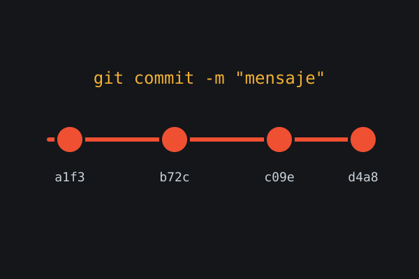
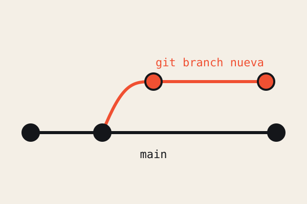
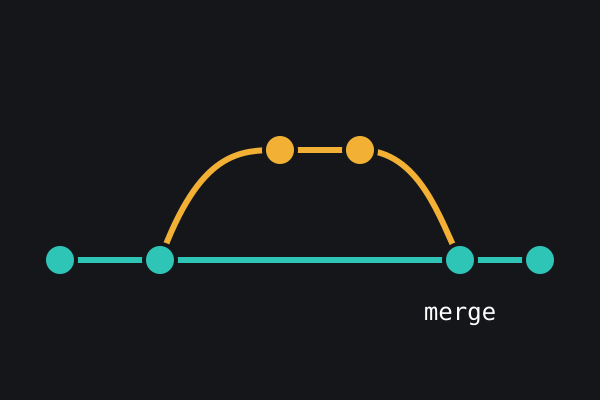

Commits y ramas
Recuerda: un commit solo guarda lo que está en el área de preparación. Primero
git add, después git commit.Un commit es una foto del proyecto en un momento dado, con un mensaje que explica qué cambió y por qué. Una buena costumbre es hacer commits pequeños y con mensajes claros.
Las ramas permiten trabajar en algo nuevo sin tocar la versión estable. Cada rama es solo un apuntador a un commit, por lo que crearlas es rápido y barato.
Cuando la función está lista, la rama se une a main con un merge. Si dos personas cambiaron la misma línea, Git avisa del conflicto y tú decides cómo resolverlo.



Comandos clave
git status
git add -A
git commit -m "Describe el cambio"git branch nueva-funcion
git switch nueva-funcion
git merge nueva-funciongit log --oneline
git diff
git status